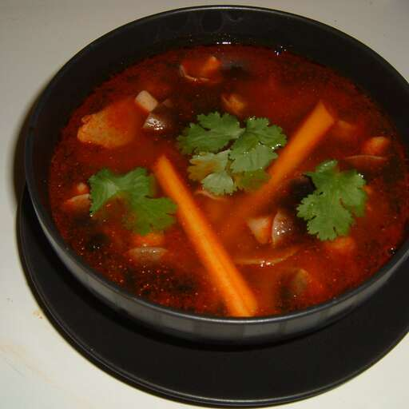

Tom Yum Goong Soup

Description
Tom yum goong soup is easy to make at home with this recipe. Koong or goong is the Thai word
for shrimp, which is featured in this delicious dish. Garnish the soup with fresh cilantro leaves.
Ingredients
- 2 lemongrass stalks
- ½ pound medium shrimp—peeled, deveined and shells reserved
- 4 cups water
- 4 makrut lime leaves
- 4 slices galangal
- 4 chile padi (bird’s eye chiles)
- 1½ tablespoons fish sauce
- 1½ limes, juiced
- 1 teaspoon white sugar
- 1 teaspoon hot chile paste
- 1 tablespoon tom yum soup paste (Optional)
- 12 fresh button mushrooms, halved
- 1 (6 ounce) can whole straw mushrooms, drained
Steps
-
Trim lemongrass and cut into matchstick-sized pieces.
-
To make stock: Add reserved shrimp heads and shells to 4 cups water in a pot over medium-low heat; simmer for
about 20 minutes. Turn off the heat and let stock sit for another 20 minutes before discarding shells.
-
Add stock, lemongrass, lime leaves, galangal, chile padi, fish sauce, lime juice, sugar, chile paste, and tom
yum soup paste to a large soup pot; bring to a boil and cook for 5 minutes.
-
Lower the heat to medium, then add shrimp, button mushrooms, and straw mushrooms. Simmer until the outsides of
shrimp are pink and the centers are opaque, about 10 minutes. Serve immediately.
Back to Home